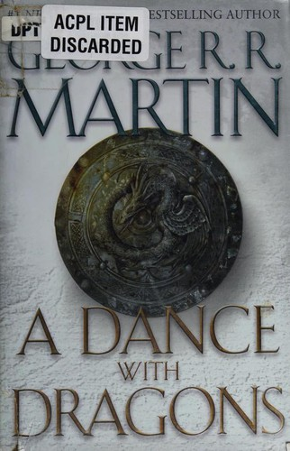

A Dance with Dragons
In the aftermath of a colossal battle, the future of the Seven Kingdoms hangs in the balance—beset by newly emerging threats from every direction. In the east, Daenerys Targaryen, the last scion of House Targaryen, rules with her three dragons as queen of a city built on dust and death. But Daenerys has thousands of enemies, and many have set out to find her. As they gather, one young man embarks upon his own quest for the queen, with an entirely different goal in mind.
Fleeing from Westeros with a price on his head, Tyrion Lannister, too, is making his way to Daenerys. But his newest allies in this quest are not the rag-tag band they seem, and at their heart lies one who could undo Daenerys's claim to Westeros forever.
Meanwhile, to the north lies the mammoth Wall of ice and stone—a structure only as strong as those guarding it. There, Jon Snow, 998th Lord Commander of the Night's Watch, will face his greatest challenge. For he has powerful foes not only within the Watch but also beyond, in the land of the creatures of ice.
From all corners, bitter conflicts reignite, intimate betrayals are perpetrated, and a grand cast of outlaws and priests, soldiers and skinchangers, nobles and slaves, will face seemingly insurmountable obstacles. Some will fail, others will grow in the strength of darkness. But in a time of rising restlessness, the tides of destiny and politics will lead inevitably to the greatest dance of all.
Further info